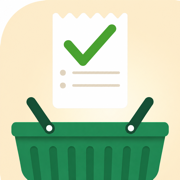

Grocerly
Privacy Policy · Updated October 23, 2026
Your lists belong to you. Grocerly stores shopping data on
your device and in your iCloud account. We cannot read your private iCloud
database. If you choose to send a receipt-scanning issue report or contact
support by email, we receive the information you send.
What data the app handles, and where it goes
- Your lists (stores, items, schedules, purchase history)
are stored on your device and, when sync is enabled, in your iCloud
(CloudKit) database. Your private lists are not accessible to us. People
you invite to a shared household can see its shared shopping data.
- Household sharing uses Apple's iCloud sharing. When you
share a store, only the people you invite can see it. We are never a party
to the share.
- Location is requested during store setup only after you
choose nearby-store suggestions. If you grant access, Grocerly can use your
location while the app is in use to suggest stores and narrow Apple Maps
store searches. The app passes a search region to Apple's MapKit service;
Apple's handling of those searches is governed by its privacy practices.
Grocerly does not send your location to our servers or save it in your
shopping data. You can use Grocerly without granting location access.
- Purchases (Grocerly Plus) are processed entirely by
Apple through the App Store. We never see your payment details.
- Bento photos and receipts that you choose to import use
Apple's image-recognition frameworks and, where available, on-device
Foundation Models to suggest grocery items. Extracted items and receipt
prices are shown for review before they affect your lists. Images and Bento
history may be stored locally with your app data. Shopping data may sync
through your own iCloud account as described above.
- Recipe links that you ask Bento to open are retrieved
from the source website. That website can receive the ordinary network
request, including your IP address, under its own privacy practices.
Grocerly does not route the page through a Grocerly server.
- Voice input uses Apple's Speech Recognition framework to
turn audio you choose to record into editable text. On-device recognition is
requested when the recognizer supports it; otherwise Apple's speech service
may process the audio. You can type instead of granting microphone or speech
permission.
- Optional receipt-scanning reports are prepared only when
you request one. Before you send, the app shows a mail or share sheet for
your review. The report can include the receipt image, recognized text,
parsed products and prices, store/date/total, your note, and app, device,
operating-system, and locale details. Receipt images can contain personal or
payment information. If you send a report to our support address, we receive
its contents and your email address through our email provider, use them to
investigate the issue and reply, and retain the correspondence as needed for
support. You can request deletion through the contact address below.
What we don't do
- No Grocerly account is required. You provide an email address only if
you choose to contact support or send an issue report.
- No analytics or tracking SDKs.
- No ads or sale of your shopping data. Apple platform services, source
recipe websites, and the email/share provider you choose may process the
relevant information for the flows described above.
- No Grocerly server receives your routine lists or location. Optional
reports sent to support may contain shopping information you choose to send.
Data retention and deletion
Your routine shopping data lives on your device and in your iCloud account.
Deleting the app removes its local data; you can manage the synced copy in
your Apple Account's iCloud storage settings. Optional support emails are separate from
your device and iCloud data; contact us to request their deletion.
Children
Grocerly is rated 4+ and contains no ads. We do not knowingly request
personal information from children. A parent or guardian can contact us about
any support report containing a child's information.
Changes to this policy
We update this policy when the app's data handling changes. The published
policy and App Store privacy details must match the released app.
Contact
Questions about privacy? Email
hello@intrapixel.com.